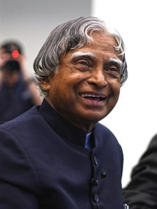

Mr. Sivasanand
I am a B.Tech Computer Science student at Karunya University, Coimbatore. I like building websites and learning new programming languages.
- Reading tech blogs
- Playing chess
- Designing web pages
HTML5
CSS3
Javascript
PHP

Dr. A. P. J. Abdul Kalam
Scientist and former President of India who taught me to dream big and work hard.
Ada Lovelace
Wrote the first computer program in the 1840s. Move the mouse over the circle to see her picture.
Tim Berners-Lee
Invented the World Wide Web and the first web browser in 1990.